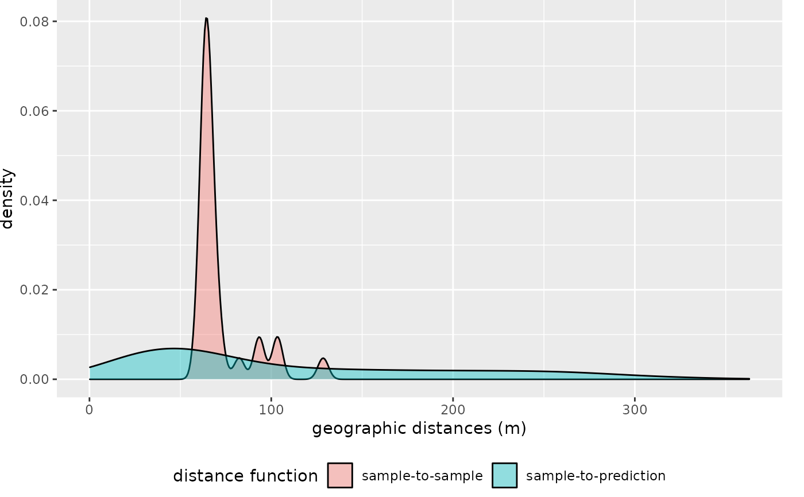
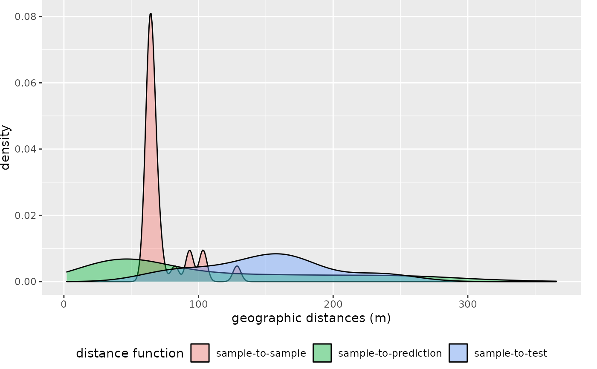
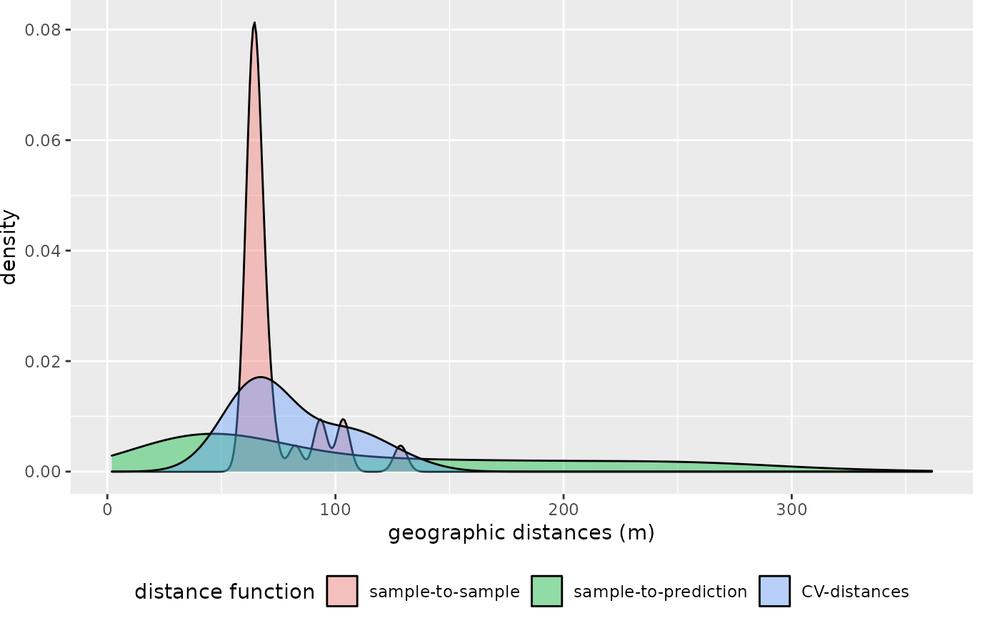
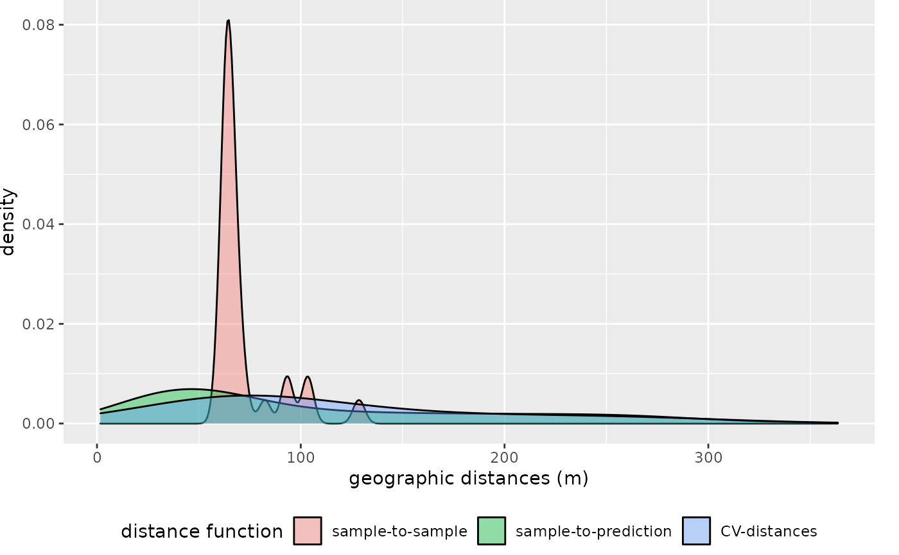
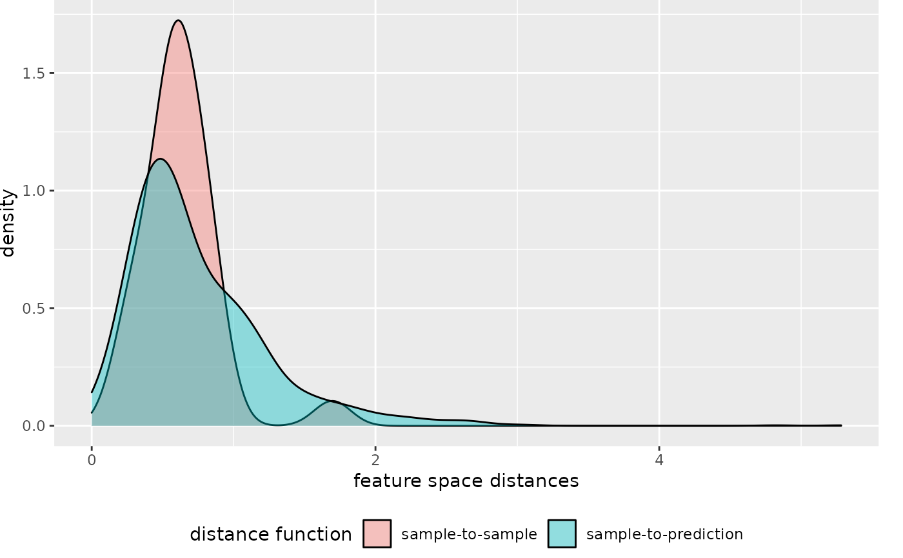
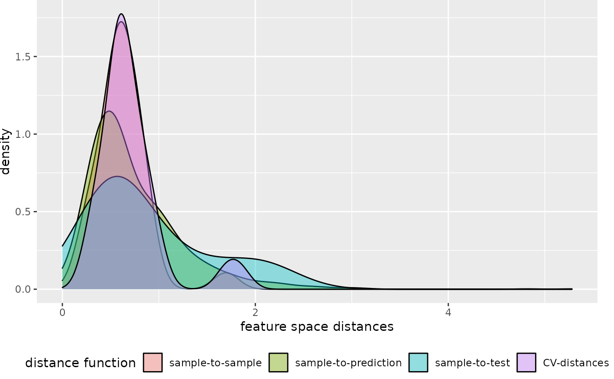
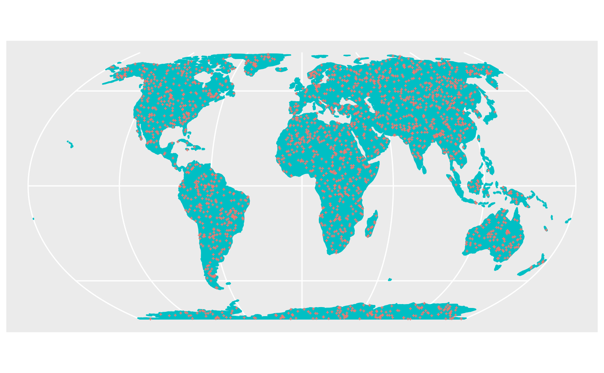
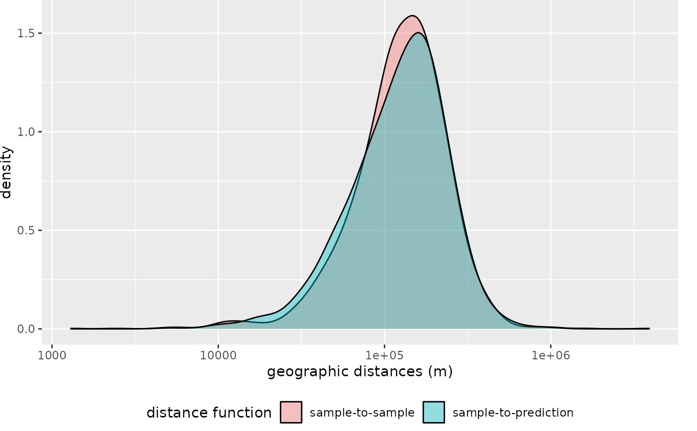

Plot euclidean nearest neighbor distances in geographic space or feature space
Source:R/plot_geodist.R
plot_geodist.RdDensity plot of nearest neighbor distances in geographic space or feature space between training data as well as between training data and prediction locations. Optional, the nearest neighbor distances between training data and test data or between training data and CV iterations is shown. The plot can be used to check the suitability of a chosen CV method to be representative to estimate map accuracy. Alternatively distances can also be calculated in the multivariate feature space.
Usage
plot_geodist(
x,
modeldomain,
type = "geo",
cvfolds = NULL,
cvtrain = NULL,
testdata = NULL,
samplesize = 2000,
sampling = "regular",
variables = NULL,
unit = "m",
stat = "density",
showPlot = TRUE
)Arguments
- x
object of class sf, training data locations
- modeldomain
raster or sf object defining the prediction area (see Details)
- type
"geo" or "feature". Should the distance be computed in geographic space or in the normalized multivariate predictor space (see Details)
- cvfolds
optional. List of row indices of x that are held back in each CV iteration. See e.g. ?createFolds or ?createSpaceTimeFolds
- cvtrain
optional. List of row indices of x to fit the model to in each CV iteration. If cvtrain is null but cvfolds is not, all samples but those included in cvfolds are used as training data
- testdata
optional. object of class sf: Data used for independent validation
- samplesize
numeric. How many prediction samples should be used?
- sampling
character. How to draw prediction samples? See spsample. Use sampling = "Fibonacci" for global applications.
- variables
character vector defining the predictor variables used if type="feature. If not provided all variables included in modeldomain are used.
- unit
character. Only if type=="geo" and only applied to the plot. Supported: "m" or "km".
- stat
"density" for density plot or "ecdf" for cumulative plot.
- showPlot
logical
Value
A list including the plot and the corresponding data.frame containing the distances. Unit of returned geographic distances is meters.
Details
The modeldomain is a sf polygon or a raster that defines the prediction area. The function takes a regular point sample (amount defined by samplesize) from the spatial extent. If type = "feature", the argument modeldomain (and if provided then also the testdata) has to include predictors. Predictor values for x are optional if modeldomain is a raster. If not provided they are extracted from the modeldomain rasterStack.
Examples
library(sf)
library(raster)
library(caret)
########### prepare sample data:
dat <- get(load(system.file("extdata","Cookfarm.RData",package="CAST")))
dat <- aggregate(dat[,c("DEM","TWI", "NDRE.M", "Easting", "Northing")],
by=list(as.character(dat$SOURCEID)),mean)
pts <- st_as_sf(dat,coords=c("Easting","Northing"))
st_crs(pts) <- 26911
pts_train <- pts[1:29,]
pts_test <- pts[30:42,]
studyArea <- raster::stack(system.file("extdata","predictors_2012-03-25.grd",package="CAST"))
studyArea <- studyArea[[c("DEM","TWI", "NDRE.M", "NDRE.Sd", "Bt")]]
########### Distance between training data and new data:
dist <- plot_geodist(pts_train,studyArea)
#> Warning: CRS object has comment, which is lost in output; in tests, see
#> https://cran.r-project.org/web/packages/sp/vignettes/CRS_warnings.html
#> Spherical geometry (s2) switched on

########### Distance between training data, new data and test data:
#mapview(pts_train,col.regions="blue")+mapview(pts_test,col.regions="red")
dist <- plot_geodist(pts_train,studyArea,testdata=pts_test)
#> Spherical geometry (s2) switched off
#> Warning: CRS object has comment, which is lost in output; in tests, see
#> https://cran.r-project.org/web/packages/sp/vignettes/CRS_warnings.html
#> Spherical geometry (s2) switched on

########### Distance between training data, new data and CV folds:
folds <- createFolds(1:nrow(pts_train),k=3,returnTrain=FALSE)
dist <- plot_geodist(x=pts_train, modeldomain=studyArea, cvfolds=folds)
#> Spherical geometry (s2) switched off
#> Warning: CRS object has comment, which is lost in output; in tests, see
#> https://cran.r-project.org/web/packages/sp/vignettes/CRS_warnings.html
#> Spherical geometry (s2) switched on

## or use nndm to define folds
nndm_pred <- nndm(pts_train, studyArea)
#> 1000 prediction points are sampled from the modeldomain
#> Spherical geometry (s2) switched off
#> Warning: CRS object has comment, which is lost in output; in tests, see
#> https://cran.r-project.org/web/packages/sp/vignettes/CRS_warnings.html
#> tpoints and ppoints must have the same CRS. tpoints have been transformed.
dist <- plot_geodist(x=pts_train, modeldomain=studyArea,
cvfolds=nndm_pred$indx_test, cvtrain=nndm_pred$indx_train)
#> Warning: CRS object has comment, which is lost in output; in tests, see
#> https://cran.r-project.org/web/packages/sp/vignettes/CRS_warnings.html
#> Spherical geometry (s2) switched on

########### Distances in the feature space:
plot_geodist(x=pts_train, modeldomain=studyArea,
type = "feature",variables=c("DEM","TWI", "NDRE.M"))
#> Spherical geometry (s2) switched off
#> Warning: CRS object has comment, which is lost in output; in tests, see
#> https://cran.r-project.org/web/packages/sp/vignettes/CRS_warnings.html
#> Warning: Transforming SpatialPoints to the crs of the Raster

#> $plot
#>
#> $distances
#> dist what dist_type
#> 1 5.756791e-01 sample-to-sample feature
#> 2 2.415539e-01 sample-to-sample feature
#> 3 2.415539e-01 sample-to-sample feature
#> 4 8.221375e-01 sample-to-sample feature
#> 5 5.834980e-01 sample-to-sample feature
#> 6 7.514592e-01 sample-to-sample feature
#> 7 6.095787e-01 sample-to-sample feature
#> 8 8.833736e-01 sample-to-sample feature
#> 9 6.253269e-01 sample-to-sample feature
#> 10 6.025636e-01 sample-to-sample feature
#> 11 7.561676e-01 sample-to-sample feature
#> 12 8.221375e-01 sample-to-sample feature
#> 13 7.166094e-01 sample-to-sample feature
#> 14 2.959509e-01 sample-to-sample feature
#> 15 5.980377e-01 sample-to-sample feature
#> 16 4.984940e-01 sample-to-sample feature
#> 17 5.593994e-01 sample-to-sample feature
#> 18 8.782812e-01 sample-to-sample feature
#> 19 4.465051e-01 sample-to-sample feature
#> 20 5.593994e-01 sample-to-sample feature
#> 21 5.464848e-01 sample-to-sample feature
#> 22 4.465051e-01 sample-to-sample feature
#> 23 1.696328e+00 sample-to-sample feature
#> 24 2.959509e-01 sample-to-sample feature
#> 25 3.906445e-01 sample-to-sample feature
#> 26 7.755953e-01 sample-to-sample feature
#> 27 7.282922e-01 sample-to-sample feature
#> 28 5.834980e-01 sample-to-sample feature
#> 29 6.128470e-01 sample-to-sample feature
#> 30 1.257734e+00 sample-to-prediction feature
#> 31 1.543274e+00 sample-to-prediction feature
#> 32 1.805100e+00 sample-to-prediction feature
#> 33 1.618307e+00 sample-to-prediction feature
#> 34 1.316989e+00 sample-to-prediction feature
#> 35 1.187613e+00 sample-to-prediction feature
#> 36 1.036578e+00 sample-to-prediction feature
#> 37 1.045350e+00 sample-to-prediction feature
#> 38 1.166589e+00 sample-to-prediction feature
#> 39 1.263156e+00 sample-to-prediction feature
#> 40 1.025540e+00 sample-to-prediction feature
#> 41 9.990347e-01 sample-to-prediction feature
#> 42 8.521373e-01 sample-to-prediction feature
#> 43 9.092097e-01 sample-to-prediction feature
#> 44 8.650953e-01 sample-to-prediction feature
#> 45 6.757239e-01 sample-to-prediction feature
#> 46 5.556895e-01 sample-to-prediction feature
#> 47 4.367782e-01 sample-to-prediction feature
#> 48 3.817281e-01 sample-to-prediction feature
#> 49 1.523441e-08 sample-to-prediction feature
#> 50 4.943916e-02 sample-to-prediction feature
#> 51 1.108635e-01 sample-to-prediction feature
#> 52 9.856608e-02 sample-to-prediction feature
#> 53 3.617978e-01 sample-to-prediction feature
#> 54 3.624323e-01 sample-to-prediction feature
#> 55 1.289175e-01 sample-to-prediction feature
#> 56 4.042433e-01 sample-to-prediction feature
#> 57 3.641002e-01 sample-to-prediction feature
#> 58 3.155072e-01 sample-to-prediction feature
#> 59 2.596415e-01 sample-to-prediction feature
#> 60 2.929095e-01 sample-to-prediction feature
#> 61 1.208897e+00 sample-to-prediction feature
#> 62 1.337856e+00 sample-to-prediction feature
#> 63 1.330926e+00 sample-to-prediction feature
#> 64 2.176452e+00 sample-to-prediction feature
#> 65 2.263455e+00 sample-to-prediction feature
#> 66 1.926736e+00 sample-to-prediction feature
#> 67 1.843541e+00 sample-to-prediction feature
#> 68 2.065954e+00 sample-to-prediction feature
#> 69 1.862777e+00 sample-to-prediction feature
#> 70 1.737123e+00 sample-to-prediction feature
#> 71 2.148592e+00 sample-to-prediction feature
#> 72 2.086177e+00 sample-to-prediction feature
#> 73 1.610860e+00 sample-to-prediction feature
#> 74 1.357748e+00 sample-to-prediction feature
#> 75 3.937401e-01 sample-to-prediction feature
#> 76 1.510149e+00 sample-to-prediction feature
#> 77 8.802565e-01 sample-to-prediction feature
#> 78 6.634979e-01 sample-to-prediction feature
#> 79 2.603456e-09 sample-to-prediction feature
#> 80 7.258874e-01 sample-to-prediction feature
#> 81 9.197435e-01 sample-to-prediction feature
#> 82 8.331301e-01 sample-to-prediction feature
#> 83 7.803475e-01 sample-to-prediction feature
#> 84 7.019132e-01 sample-to-prediction feature
#> 85 5.911843e-01 sample-to-prediction feature
#> 86 4.249186e-01 sample-to-prediction feature
#> 87 5.900313e-01 sample-to-prediction feature
#> 88 2.064820e-01 sample-to-prediction feature
#> 89 9.191279e-10 sample-to-prediction feature
#> 90 3.112628e-01 sample-to-prediction feature
#> 91 4.612276e-01 sample-to-prediction feature
#> 92 4.199359e-01 sample-to-prediction feature
#> 93 2.163125e-01 sample-to-prediction feature
#> 94 2.772018e-01 sample-to-prediction feature
#> 95 2.069836e-01 sample-to-prediction feature
#> 96 1.747288e-01 sample-to-prediction feature
#> 97 3.602983e-01 sample-to-prediction feature
#> 98 6.541115e-01 sample-to-prediction feature
#> 99 6.333536e-01 sample-to-prediction feature
#> 100 5.898628e-01 sample-to-prediction feature
#> 101 1.731566e-01 sample-to-prediction feature
#> 102 2.883237e-01 sample-to-prediction feature
#> 103 1.758435e-01 sample-to-prediction feature
#> 104 3.944417e-01 sample-to-prediction feature
#> 105 3.727720e-01 sample-to-prediction feature
#> 106 4.659412e-01 sample-to-prediction feature
#> 107 5.101456e-01 sample-to-prediction feature
#> 108 3.786393e-01 sample-to-prediction feature
#> 109 4.691956e-01 sample-to-prediction feature
#> 110 3.364187e-01 sample-to-prediction feature
#> 111 2.800486e-01 sample-to-prediction feature
#> 112 3.884646e-01 sample-to-prediction feature
#> 113 6.316373e-01 sample-to-prediction feature
#> 114 7.269869e-01 sample-to-prediction feature
#> 115 1.251177e+00 sample-to-prediction feature
#> 116 1.529788e+00 sample-to-prediction feature
#> 117 6.063261e-01 sample-to-prediction feature
#> 118 5.443685e-01 sample-to-prediction feature
#> 119 7.699266e-01 sample-to-prediction feature
#> 120 1.255998e+00 sample-to-prediction feature
#> 121 1.517457e+00 sample-to-prediction feature
#> 122 1.991912e+00 sample-to-prediction feature
#> 123 2.218721e+00 sample-to-prediction feature
#> 124 2.611684e+00 sample-to-prediction feature
#> 125 2.347568e+00 sample-to-prediction feature
#> 126 2.199802e+00 sample-to-prediction feature
#> 127 1.144991e+00 sample-to-prediction feature
#> 128 8.412450e-01 sample-to-prediction feature
#> 129 9.987556e-01 sample-to-prediction feature
#> 130 1.402028e-01 sample-to-prediction feature
#> 131 9.501076e-01 sample-to-prediction feature
#> 132 8.194657e-01 sample-to-prediction feature
#> 133 1.139669e+00 sample-to-prediction feature
#> 134 1.012553e+00 sample-to-prediction feature
#> 135 9.150771e-01 sample-to-prediction feature
#> 136 7.084819e-01 sample-to-prediction feature
#> 137 5.681516e-01 sample-to-prediction feature
#> 138 4.241636e-01 sample-to-prediction feature
#> 139 5.896643e-01 sample-to-prediction feature
#> 140 4.793248e-01 sample-to-prediction feature
#> 141 1.527430e-01 sample-to-prediction feature
#> 142 1.875306e-01 sample-to-prediction feature
#> 143 3.314488e-01 sample-to-prediction feature
#> 144 5.218430e-01 sample-to-prediction feature
#> 145 4.659973e-01 sample-to-prediction feature
#> 146 3.021309e-01 sample-to-prediction feature
#> 147 2.843259e-01 sample-to-prediction feature
#> 148 3.991144e-01 sample-to-prediction feature
#> 149 2.478820e-01 sample-to-prediction feature
#> 150 3.710423e-01 sample-to-prediction feature
#> 151 2.773407e-01 sample-to-prediction feature
#> 152 4.304281e-01 sample-to-prediction feature
#> 153 4.704535e-01 sample-to-prediction feature
#> 154 5.594323e-01 sample-to-prediction feature
#> 155 3.351733e-01 sample-to-prediction feature
#> 156 3.698996e-01 sample-to-prediction feature
#> 157 3.328505e-01 sample-to-prediction feature
#> 158 7.205059e-09 sample-to-prediction feature
#> 159 4.319354e-01 sample-to-prediction feature
#> 160 3.964244e-01 sample-to-prediction feature
#> 161 6.212374e-01 sample-to-prediction feature
#> 162 4.959966e-01 sample-to-prediction feature
#> 163 1.382301e-08 sample-to-prediction feature
#> 164 1.925412e-01 sample-to-prediction feature
#> 165 5.536921e-01 sample-to-prediction feature
#> 166 5.289659e-01 sample-to-prediction feature
#> 167 3.014483e-01 sample-to-prediction feature
#> 168 2.101748e-01 sample-to-prediction feature
#> 169 4.291830e-01 sample-to-prediction feature
#> 170 5.371442e-01 sample-to-prediction feature
#> 171 3.577175e-01 sample-to-prediction feature
#> 172 1.024675e+00 sample-to-prediction feature
#> 173 1.484292e+00 sample-to-prediction feature
#> 174 1.741247e+00 sample-to-prediction feature
#> 175 1.682463e+00 sample-to-prediction feature
#> 176 1.556972e+00 sample-to-prediction feature
#> 177 1.473550e+00 sample-to-prediction feature
#> 178 1.245553e+00 sample-to-prediction feature
#> 179 1.790859e+00 sample-to-prediction feature
#> 180 2.019441e+00 sample-to-prediction feature
#> 181 1.793897e+00 sample-to-prediction feature
#> 182 1.487819e+00 sample-to-prediction feature
#> 183 9.560447e-01 sample-to-prediction feature
#> 184 1.437944e+00 sample-to-prediction feature
#> 185 5.063273e-01 sample-to-prediction feature
#> 186 1.073938e+00 sample-to-prediction feature
#> 187 1.146831e+00 sample-to-prediction feature
#> 188 8.752233e-01 sample-to-prediction feature
#> 189 8.526190e-01 sample-to-prediction feature
#> 190 8.445751e-01 sample-to-prediction feature
#> 191 8.041334e-01 sample-to-prediction feature
#> 192 3.725747e-01 sample-to-prediction feature
#> 193 3.271529e-01 sample-to-prediction feature
#> 194 2.935726e-01 sample-to-prediction feature
#> 195 1.930720e-01 sample-to-prediction feature
#> 196 2.769190e-01 sample-to-prediction feature
#> 197 5.670281e-01 sample-to-prediction feature
#> 198 4.738982e-01 sample-to-prediction feature
#> 199 3.625670e-01 sample-to-prediction feature
#> 200 5.196650e-01 sample-to-prediction feature
#> 201 4.934035e-01 sample-to-prediction feature
#> 202 3.302283e-01 sample-to-prediction feature
#> 203 3.494958e-01 sample-to-prediction feature
#> 204 4.153607e-01 sample-to-prediction feature
#> 205 3.107629e-01 sample-to-prediction feature
#> 206 2.097944e-01 sample-to-prediction feature
#> 207 5.656766e-01 sample-to-prediction feature
#> 208 7.190207e-01 sample-to-prediction feature
#> 209 3.366714e-01 sample-to-prediction feature
#> 210 3.129991e-01 sample-to-prediction feature
#> 211 5.910333e-01 sample-to-prediction feature
#> 212 4.952343e-01 sample-to-prediction feature
#> 213 2.550399e-01 sample-to-prediction feature
#> 214 5.206263e-01 sample-to-prediction feature
#> 215 5.468060e-01 sample-to-prediction feature
#> 216 7.371784e-01 sample-to-prediction feature
#> 217 6.429887e-01 sample-to-prediction feature
#> 218 6.824207e-01 sample-to-prediction feature
#> 219 5.176960e-01 sample-to-prediction feature
#> 220 2.671145e-01 sample-to-prediction feature
#> 221 3.530517e-01 sample-to-prediction feature
#> 222 2.735725e-01 sample-to-prediction feature
#> 223 5.640535e-01 sample-to-prediction feature
#> 224 5.515213e-01 sample-to-prediction feature
#> 225 6.884949e-01 sample-to-prediction feature
#> 226 5.908566e-01 sample-to-prediction feature
#> 227 1.752986e-08 sample-to-prediction feature
#> 228 9.146771e-01 sample-to-prediction feature
#> 229 9.442155e-01 sample-to-prediction feature
#> 230 9.350261e-01 sample-to-prediction feature
#> 231 8.657215e-01 sample-to-prediction feature
#> 232 1.066014e+00 sample-to-prediction feature
#> 233 1.103986e+00 sample-to-prediction feature
#> 234 9.629467e-01 sample-to-prediction feature
#> 235 1.865671e+00 sample-to-prediction feature
#> 236 1.833612e+00 sample-to-prediction feature
#> 237 1.754962e+00 sample-to-prediction feature
#> 238 9.684746e-01 sample-to-prediction feature
#> 239 4.628229e-01 sample-to-prediction feature
#> 240 4.430030e-01 sample-to-prediction feature
#> 241 1.113222e+00 sample-to-prediction feature
#> 242 3.901862e-01 sample-to-prediction feature
#> 243 7.815092e-01 sample-to-prediction feature
#> 244 9.413979e-01 sample-to-prediction feature
#> 245 3.387696e-01 sample-to-prediction feature
#> 246 7.684336e-01 sample-to-prediction feature
#> 247 6.795840e-01 sample-to-prediction feature
#> 248 4.760810e-01 sample-to-prediction feature
#> 249 2.537147e-01 sample-to-prediction feature
#> 250 1.345924e-01 sample-to-prediction feature
#> 251 2.644273e-01 sample-to-prediction feature
#> 252 3.862190e-01 sample-to-prediction feature
#> 253 2.523971e-01 sample-to-prediction feature
#> 254 6.318331e-01 sample-to-prediction feature
#> 255 5.254361e-01 sample-to-prediction feature
#> 256 2.186381e-01 sample-to-prediction feature
#> 257 2.657500e-01 sample-to-prediction feature
#> 258 3.310179e-01 sample-to-prediction feature
#> 259 2.509945e-01 sample-to-prediction feature
#> 260 2.964368e-01 sample-to-prediction feature
#> 261 2.549257e-01 sample-to-prediction feature
#> 262 5.025010e-01 sample-to-prediction feature
#> 263 1.706700e+00 sample-to-prediction feature
#> 264 4.759462e-01 sample-to-prediction feature
#> 265 3.879326e-01 sample-to-prediction feature
#> 266 7.433624e-01 sample-to-prediction feature
#> 267 9.172347e-01 sample-to-prediction feature
#> 268 9.916207e-01 sample-to-prediction feature
#> 269 7.023982e-01 sample-to-prediction feature
#> 270 9.783190e-01 sample-to-prediction feature
#> 271 1.197517e+00 sample-to-prediction feature
#> 272 8.312944e-01 sample-to-prediction feature
#> 273 4.011238e-01 sample-to-prediction feature
#> 274 4.500914e-01 sample-to-prediction feature
#> 275 6.835020e-01 sample-to-prediction feature
#> 276 5.091183e-01 sample-to-prediction feature
#> 277 2.107933e-01 sample-to-prediction feature
#> 278 4.081568e-01 sample-to-prediction feature
#> 279 8.446972e-01 sample-to-prediction feature
#> 280 8.822973e-01 sample-to-prediction feature
#> 281 7.693023e-01 sample-to-prediction feature
#> 282 1.054225e+00 sample-to-prediction feature
#> 283 1.161464e+00 sample-to-prediction feature
#> 284 1.258764e+00 sample-to-prediction feature
#> 285 8.174346e-01 sample-to-prediction feature
#> 286 8.373422e-01 sample-to-prediction feature
#> 287 1.001788e+00 sample-to-prediction feature
#> 288 1.259146e+00 sample-to-prediction feature
#> 289 1.531725e+00 sample-to-prediction feature
#> 290 1.756657e+00 sample-to-prediction feature
#> 291 1.760162e+00 sample-to-prediction feature
#> 292 1.768540e+00 sample-to-prediction feature
#> 293 1.773415e+00 sample-to-prediction feature
#> 294 1.436572e+00 sample-to-prediction feature
#> 295 1.311922e+00 sample-to-prediction feature
#> 296 6.483697e-01 sample-to-prediction feature
#> 297 5.101404e-01 sample-to-prediction feature
#> 298 5.289570e-01 sample-to-prediction feature
#> 299 3.870973e-01 sample-to-prediction feature
#> 300 7.113412e-01 sample-to-prediction feature
#> 301 6.720871e-01 sample-to-prediction feature
#> 302 7.764333e-01 sample-to-prediction feature
#> 303 9.302656e-01 sample-to-prediction feature
#> 304 9.201091e-01 sample-to-prediction feature
#> 305 5.573352e-01 sample-to-prediction feature
#> 306 5.920326e-01 sample-to-prediction feature
#> 307 4.901043e-01 sample-to-prediction feature
#> 308 4.651736e-01 sample-to-prediction feature
#> 309 4.891869e-01 sample-to-prediction feature
#> 310 4.154646e-01 sample-to-prediction feature
#> 311 3.469627e-01 sample-to-prediction feature
#> 312 4.883493e-01 sample-to-prediction feature
#> 313 2.661878e-01 sample-to-prediction feature
#> 314 5.124411e-01 sample-to-prediction feature
#> 315 3.008931e-01 sample-to-prediction feature
#> 316 1.060224e-01 sample-to-prediction feature
#> 317 6.199320e-01 sample-to-prediction feature
#> 318 5.553277e-01 sample-to-prediction feature
#> 319 8.062306e-01 sample-to-prediction feature
#> 320 6.810367e-01 sample-to-prediction feature
#> 321 2.503835e-01 sample-to-prediction feature
#> 322 1.509723e-01 sample-to-prediction feature
#> 323 2.283480e-01 sample-to-prediction feature
#> 324 2.121910e-01 sample-to-prediction feature
#> 325 4.865558e-01 sample-to-prediction feature
#> 326 6.323833e-01 sample-to-prediction feature
#> 327 7.485293e-01 sample-to-prediction feature
#> 328 4.417982e-01 sample-to-prediction feature
#> 329 1.098616e+00 sample-to-prediction feature
#> 330 1.402201e+00 sample-to-prediction feature
#> 331 1.220165e+00 sample-to-prediction feature
#> 332 1.034348e+00 sample-to-prediction feature
#> 333 6.034115e-01 sample-to-prediction feature
#> 334 5.062376e-01 sample-to-prediction feature
#> 335 2.335851e-01 sample-to-prediction feature
#> 336 3.987089e-01 sample-to-prediction feature
#> 337 4.760522e-01 sample-to-prediction feature
#> 338 3.440072e-01 sample-to-prediction feature
#> 339 4.693115e-01 sample-to-prediction feature
#> 340 6.942851e-01 sample-to-prediction feature
#> 341 6.772157e-01 sample-to-prediction feature
#> 342 7.073242e-01 sample-to-prediction feature
#> 343 6.380304e-01 sample-to-prediction feature
#> 344 5.237479e-01 sample-to-prediction feature
#> 345 5.076131e-01 sample-to-prediction feature
#> 346 4.871027e-01 sample-to-prediction feature
#> 347 7.646322e-01 sample-to-prediction feature
#> 348 8.799036e-01 sample-to-prediction feature
#> 349 9.891309e-01 sample-to-prediction feature
#> 350 1.259582e+00 sample-to-prediction feature
#> 351 1.167388e+00 sample-to-prediction feature
#> 352 1.153160e+00 sample-to-prediction feature
#> 353 1.174675e+00 sample-to-prediction feature
#> 354 1.180935e+00 sample-to-prediction feature
#> 355 1.065547e+00 sample-to-prediction feature
#> 356 2.770975e-01 sample-to-prediction feature
#> 357 2.849941e-01 sample-to-prediction feature
#> 358 3.354590e-01 sample-to-prediction feature
#> 359 6.872010e-01 sample-to-prediction feature
#> 360 7.070200e-01 sample-to-prediction feature
#> 361 7.417654e-09 sample-to-prediction feature
#> 362 7.004236e-01 sample-to-prediction feature
#> 363 9.893912e-01 sample-to-prediction feature
#> 364 9.972857e-01 sample-to-prediction feature
#> 365 8.963229e-01 sample-to-prediction feature
#> 366 7.152892e-01 sample-to-prediction feature
#> 367 5.968651e-01 sample-to-prediction feature
#> 368 4.659185e-01 sample-to-prediction feature
#> 369 3.842612e-01 sample-to-prediction feature
#> 370 4.563287e-01 sample-to-prediction feature
#> 371 3.136086e-01 sample-to-prediction feature
#> 372 3.778004e-01 sample-to-prediction feature
#> 373 3.613130e-01 sample-to-prediction feature
#> 374 3.835684e-01 sample-to-prediction feature
#> 375 4.827835e-02 sample-to-prediction feature
#> 376 4.717019e-01 sample-to-prediction feature
#> 377 6.753258e-01 sample-to-prediction feature
#> 378 9.023790e-01 sample-to-prediction feature
#> 379 1.024605e+00 sample-to-prediction feature
#> 380 1.102882e+00 sample-to-prediction feature
#> 381 6.734918e-01 sample-to-prediction feature
#> 382 5.515612e-01 sample-to-prediction feature
#> 383 6.210540e-01 sample-to-prediction feature
#> 384 4.459458e-01 sample-to-prediction feature
#> 385 1.148121e+00 sample-to-prediction feature
#> 386 6.062712e-01 sample-to-prediction feature
#> 387 1.386926e-01 sample-to-prediction feature
#> 388 4.080534e-01 sample-to-prediction feature
#> 389 3.868710e-01 sample-to-prediction feature
#> 390 2.674838e-01 sample-to-prediction feature
#> 391 2.269942e-01 sample-to-prediction feature
#> 392 4.682897e-01 sample-to-prediction feature
#> 393 1.876314e-01 sample-to-prediction feature
#> 394 2.883029e-01 sample-to-prediction feature
#> 395 5.291938e-01 sample-to-prediction feature
#> 396 3.390804e-01 sample-to-prediction feature
#> 397 3.877181e-01 sample-to-prediction feature
#> 398 2.460701e-01 sample-to-prediction feature
#> 399 4.373182e-01 sample-to-prediction feature
#> 400 6.330109e-01 sample-to-prediction feature
#> 401 6.259875e-01 sample-to-prediction feature
#> 402 4.424902e-01 sample-to-prediction feature
#> 403 4.658484e-01 sample-to-prediction feature
#> 404 1.892007e-01 sample-to-prediction feature
#> 405 4.069994e-01 sample-to-prediction feature
#> 406 4.024089e-01 sample-to-prediction feature
#> 407 4.435541e-01 sample-to-prediction feature
#> 408 4.905111e-01 sample-to-prediction feature
#> 409 5.766136e-01 sample-to-prediction feature
#> 410 7.394972e-01 sample-to-prediction feature
#> 411 8.143323e-01 sample-to-prediction feature
#> 412 5.870223e-01 sample-to-prediction feature
#> 413 6.712333e-01 sample-to-prediction feature
#> 414 5.321475e-01 sample-to-prediction feature
#> 415 1.808440e-01 sample-to-prediction feature
#> 416 3.364661e-01 sample-to-prediction feature
#> 417 3.914214e-01 sample-to-prediction feature
#> 418 4.993365e-01 sample-to-prediction feature
#> 419 4.003774e-01 sample-to-prediction feature
#> 420 5.554060e-01 sample-to-prediction feature
#> 421 1.117721e+00 sample-to-prediction feature
#> 422 5.469580e-01 sample-to-prediction feature
#> 423 4.801994e-01 sample-to-prediction feature
#> 424 4.760980e-01 sample-to-prediction feature
#> 425 1.149811e+00 sample-to-prediction feature
#> 426 9.863227e-01 sample-to-prediction feature
#> 427 3.589989e-01 sample-to-prediction feature
#> 428 5.016164e-01 sample-to-prediction feature
#> 429 3.344163e-01 sample-to-prediction feature
#> 430 2.536195e-01 sample-to-prediction feature
#> 431 5.065225e-01 sample-to-prediction feature
#> 432 4.537350e-01 sample-to-prediction feature
#> 433 4.106060e-01 sample-to-prediction feature
#> 434 3.400366e-01 sample-to-prediction feature
#> 435 3.885048e-01 sample-to-prediction feature
#> 436 3.842580e-01 sample-to-prediction feature
#> 437 2.354876e-01 sample-to-prediction feature
#> 438 6.361748e-01 sample-to-prediction feature
#> 439 7.274101e-01 sample-to-prediction feature
#> 440 8.811556e-01 sample-to-prediction feature
#> 441 8.574401e-01 sample-to-prediction feature
#> 442 5.288496e-01 sample-to-prediction feature
#> 443 4.422124e-01 sample-to-prediction feature
#> 444 8.431398e-01 sample-to-prediction feature
#> 445 7.970545e-01 sample-to-prediction feature
#> 446 6.827085e-01 sample-to-prediction feature
#> 447 6.616193e-01 sample-to-prediction feature
#> 448 6.563813e-01 sample-to-prediction feature
#> 449 6.847743e-01 sample-to-prediction feature
#> 450 8.656362e-01 sample-to-prediction feature
#> 451 5.356788e-01 sample-to-prediction feature
#> 452 3.996879e-01 sample-to-prediction feature
#> 453 2.544721e-01 sample-to-prediction feature
#> 454 3.864935e-01 sample-to-prediction feature
#> 455 3.896351e-01 sample-to-prediction feature
#> 456 4.238015e-01 sample-to-prediction feature
#> 457 5.497874e-01 sample-to-prediction feature
#> 458 1.895858e-01 sample-to-prediction feature
#> 459 1.509272e+00 sample-to-prediction feature
#> 460 1.568206e+00 sample-to-prediction feature
#> 461 7.428461e-01 sample-to-prediction feature
#> 462 2.926689e-01 sample-to-prediction feature
#> 463 5.571223e-01 sample-to-prediction feature
#> 464 4.370161e-01 sample-to-prediction feature
#> 465 3.146074e-01 sample-to-prediction feature
#> 466 1.443739e-01 sample-to-prediction feature
#> 467 2.086786e-01 sample-to-prediction feature
#> 468 4.510664e-01 sample-to-prediction feature
#> 469 4.165861e-01 sample-to-prediction feature
#> 470 7.030415e-01 sample-to-prediction feature
#> 471 9.003737e-01 sample-to-prediction feature
#> 472 9.279676e-01 sample-to-prediction feature
#> 473 8.068714e-01 sample-to-prediction feature
#> 474 9.295849e-01 sample-to-prediction feature
#> 475 6.870760e-01 sample-to-prediction feature
#> 476 8.260921e-01 sample-to-prediction feature
#> 477 2.291385e-01 sample-to-prediction feature
#> 478 4.903274e-01 sample-to-prediction feature
#> 479 4.591762e-01 sample-to-prediction feature
#> 480 4.684820e-01 sample-to-prediction feature
#> 481 4.084938e-01 sample-to-prediction feature
#> 482 3.970614e-01 sample-to-prediction feature
#> 483 5.778467e-01 sample-to-prediction feature
#> 484 4.396357e-01 sample-to-prediction feature
#> 485 8.851338e-01 sample-to-prediction feature
#> 486 2.895358e-01 sample-to-prediction feature
#> 487 1.108041e+00 sample-to-prediction feature
#> 488 9.834494e-01 sample-to-prediction feature
#> 489 6.676054e-01 sample-to-prediction feature
#> 490 5.988654e-01 sample-to-prediction feature
#> 491 4.372762e-01 sample-to-prediction feature
#> 492 3.591764e-01 sample-to-prediction feature
#> 493 5.198401e-01 sample-to-prediction feature
#> 494 1.347359e-01 sample-to-prediction feature
#> 495 4.129760e-01 sample-to-prediction feature
#> 496 1.301672e-01 sample-to-prediction feature
#> 497 3.836968e-01 sample-to-prediction feature
#> 498 5.808418e-01 sample-to-prediction feature
#> 499 4.917475e-01 sample-to-prediction feature
#> 500 5.710954e-02 sample-to-prediction feature
#> 501 1.664867e-08 sample-to-prediction feature
#> 502 2.574491e-01 sample-to-prediction feature
#> 503 9.547534e-01 sample-to-prediction feature
#> 504 9.064303e-01 sample-to-prediction feature
#> 505 7.739260e-01 sample-to-prediction feature
#> 506 8.123901e-01 sample-to-prediction feature
#> 507 1.002933e+00 sample-to-prediction feature
#> 508 4.352990e-01 sample-to-prediction feature
#> 509 2.018571e-01 sample-to-prediction feature
#> 510 3.292671e-08 sample-to-prediction feature
#> 511 4.919269e-01 sample-to-prediction feature
#> 512 8.332309e-01 sample-to-prediction feature
#> 513 4.564657e-01 sample-to-prediction feature
#> 514 2.270268e-01 sample-to-prediction feature
#> 515 1.611753e-01 sample-to-prediction feature
#> 516 5.021234e-01 sample-to-prediction feature
#> 517 6.382491e-01 sample-to-prediction feature
#> 518 6.542885e-01 sample-to-prediction feature
#> 519 5.660442e-01 sample-to-prediction feature
#> 520 5.877748e-01 sample-to-prediction feature
#> 521 4.067277e-01 sample-to-prediction feature
#> 522 3.594121e-01 sample-to-prediction feature
#> 523 1.318314e-01 sample-to-prediction feature
#> 524 4.984248e-01 sample-to-prediction feature
#> 525 5.676431e-01 sample-to-prediction feature
#> 526 8.492316e-01 sample-to-prediction feature
#> 527 8.603769e-01 sample-to-prediction feature
#> 528 6.928221e-01 sample-to-prediction feature
#> 529 4.841533e-01 sample-to-prediction feature
#> 530 3.545434e-01 sample-to-prediction feature
#> 531 4.544684e-01 sample-to-prediction feature
#> 532 4.009664e-01 sample-to-prediction feature
#> 533 5.814956e-01 sample-to-prediction feature
#> 534 6.412832e-01 sample-to-prediction feature
#> 535 6.478540e-01 sample-to-prediction feature
#> 536 7.146483e-01 sample-to-prediction feature
#> 537 7.408068e-01 sample-to-prediction feature
#> 538 5.453463e-01 sample-to-prediction feature
#> 539 2.980530e-01 sample-to-prediction feature
#> 540 3.760202e-01 sample-to-prediction feature
#> 541 7.327991e-01 sample-to-prediction feature
#> 542 5.138387e-01 sample-to-prediction feature
#> 543 3.098581e-01 sample-to-prediction feature
#> 544 4.197610e-01 sample-to-prediction feature
#> 545 2.270264e-01 sample-to-prediction feature
#> 546 9.744504e-01 sample-to-prediction feature
#> 547 9.518970e-01 sample-to-prediction feature
#> 548 5.474010e-01 sample-to-prediction feature
#> 549 6.300539e-01 sample-to-prediction feature
#> 550 8.518829e-01 sample-to-prediction feature
#> 551 1.890075e-01 sample-to-prediction feature
#> 552 2.604361e-01 sample-to-prediction feature
#> 553 7.446939e-01 sample-to-prediction feature
#> 554 9.908511e-01 sample-to-prediction feature
#> 555 9.235615e-01 sample-to-prediction feature
#> 556 1.011960e+00 sample-to-prediction feature
#> 557 1.016924e+00 sample-to-prediction feature
#> 558 1.060200e+00 sample-to-prediction feature
#> 559 8.586111e-01 sample-to-prediction feature
#> 560 8.554184e-01 sample-to-prediction feature
#> 561 8.517228e-01 sample-to-prediction feature
#> 562 8.889495e-01 sample-to-prediction feature
#> 563 1.290026e+00 sample-to-prediction feature
#> 564 1.399418e+00 sample-to-prediction feature
#> 565 1.182049e+00 sample-to-prediction feature
#> 566 1.274060e+00 sample-to-prediction feature
#> 567 5.517674e-01 sample-to-prediction feature
#> 568 6.695638e-01 sample-to-prediction feature
#> 569 8.373076e-01 sample-to-prediction feature
#> 570 2.313633e-01 sample-to-prediction feature
#> 571 7.641328e-01 sample-to-prediction feature
#> 572 8.157243e-01 sample-to-prediction feature
#> 573 4.546815e-01 sample-to-prediction feature
#> 574 2.651547e-01 sample-to-prediction feature
#> 575 3.740443e-01 sample-to-prediction feature
#> 576 3.837083e-01 sample-to-prediction feature
#> 577 2.603149e-01 sample-to-prediction feature
#> 578 4.921333e-01 sample-to-prediction feature
#> 579 3.275046e-01 sample-to-prediction feature
#> 580 3.156804e-01 sample-to-prediction feature
#> 581 4.149091e-01 sample-to-prediction feature
#> 582 4.301525e-01 sample-to-prediction feature
#> 583 4.728512e-01 sample-to-prediction feature
#> 584 1.742794e-01 sample-to-prediction feature
#> 585 3.637375e-01 sample-to-prediction feature
#> 586 5.441334e-01 sample-to-prediction feature
#> 587 6.795043e-01 sample-to-prediction feature
#> 588 6.079899e-01 sample-to-prediction feature
#> 589 4.487784e-01 sample-to-prediction feature
#> 590 7.638537e-01 sample-to-prediction feature
#> 591 9.674392e-01 sample-to-prediction feature
#> 592 9.572688e-01 sample-to-prediction feature
#> 593 1.010530e+00 sample-to-prediction feature
#> 594 1.148804e+00 sample-to-prediction feature
#> 595 1.124514e+00 sample-to-prediction feature
#> 596 1.218762e+00 sample-to-prediction feature
#> 597 1.320387e+00 sample-to-prediction feature
#> 598 9.106841e-01 sample-to-prediction feature
#> 599 7.039232e-01 sample-to-prediction feature
#> 600 6.317342e-01 sample-to-prediction feature
#> 601 5.402502e-01 sample-to-prediction feature
#> 602 2.123788e-01 sample-to-prediction feature
#> 603 3.759722e-01 sample-to-prediction feature
#> 604 5.654173e-01 sample-to-prediction feature
#> 605 5.135679e-01 sample-to-prediction feature
#> 606 6.757634e-01 sample-to-prediction feature
#> 607 6.008741e-01 sample-to-prediction feature
#> 608 6.994620e-01 sample-to-prediction feature
#> 609 8.086601e-01 sample-to-prediction feature
#> 610 7.136578e-01 sample-to-prediction feature
#> 611 6.235827e-01 sample-to-prediction feature
#> 612 4.824410e-01 sample-to-prediction feature
#> 613 6.291139e-01 sample-to-prediction feature
#> 614 8.122328e-01 sample-to-prediction feature
#> 615 8.807013e-01 sample-to-prediction feature
#> 616 7.727885e-01 sample-to-prediction feature
#> 617 7.394927e-01 sample-to-prediction feature
#> 618 8.852600e-01 sample-to-prediction feature
#> 619 9.427495e-01 sample-to-prediction feature
#> 620 9.557366e-01 sample-to-prediction feature
#> 621 7.702097e-01 sample-to-prediction feature
#> 622 8.415201e-01 sample-to-prediction feature
#> 623 1.089947e+00 sample-to-prediction feature
#> 624 1.097843e+00 sample-to-prediction feature
#> 625 1.227714e+00 sample-to-prediction feature
#> 626 1.233346e+00 sample-to-prediction feature
#> 627 1.254476e+00 sample-to-prediction feature
#> 628 1.398113e+00 sample-to-prediction feature
#> 629 1.444281e+00 sample-to-prediction feature
#> 630 1.042341e+00 sample-to-prediction feature
#> 631 6.352286e-01 sample-to-prediction feature
#> 632 3.203694e-01 sample-to-prediction feature
#> 633 1.681542e-01 sample-to-prediction feature
#> 634 3.848507e-01 sample-to-prediction feature
#> 635 5.759133e-01 sample-to-prediction feature
#> 636 3.904718e-01 sample-to-prediction feature
#> 637 2.616854e-01 sample-to-prediction feature
#> 638 2.021382e-01 sample-to-prediction feature
#> 639 2.127547e-01 sample-to-prediction feature
#> 640 2.380345e-01 sample-to-prediction feature
#> 641 3.831053e-01 sample-to-prediction feature
#> 642 2.918562e-01 sample-to-prediction feature
#> 643 4.191673e-01 sample-to-prediction feature
#> 644 3.722850e-01 sample-to-prediction feature
#> 645 3.596538e-01 sample-to-prediction feature
#> 646 3.703669e-01 sample-to-prediction feature
#> 647 6.698387e-01 sample-to-prediction feature
#> 648 9.482079e-01 sample-to-prediction feature
#> 649 1.503917e+00 sample-to-prediction feature
#> 650 2.349867e+00 sample-to-prediction feature
#> 651 2.503911e+00 sample-to-prediction feature
#> 652 1.715365e+00 sample-to-prediction feature
#> 653 1.538723e+00 sample-to-prediction feature
#> 654 1.282035e+00 sample-to-prediction feature
#> 655 1.204038e+00 sample-to-prediction feature
#> 656 7.610042e-01 sample-to-prediction feature
#> 657 7.316050e-01 sample-to-prediction feature
#> 658 5.660934e-01 sample-to-prediction feature
#> 659 6.502853e-01 sample-to-prediction feature
#> 660 4.479777e-01 sample-to-prediction feature
#> 661 4.886568e-01 sample-to-prediction feature
#> 662 5.191027e-01 sample-to-prediction feature
#> 663 4.265402e-01 sample-to-prediction feature
#> 664 8.520285e-01 sample-to-prediction feature
#> 665 1.298763e+00 sample-to-prediction feature
#> 666 5.746580e-01 sample-to-prediction feature
#> 667 3.372829e-01 sample-to-prediction feature
#> 668 4.141984e-01 sample-to-prediction feature
#> 669 7.539594e-01 sample-to-prediction feature
#> 670 5.074775e-01 sample-to-prediction feature
#> 671 6.163978e-01 sample-to-prediction feature
#> 672 5.773632e-01 sample-to-prediction feature
#> 673 7.935017e-01 sample-to-prediction feature
#> 674 7.175267e-01 sample-to-prediction feature
#> 675 8.751242e-01 sample-to-prediction feature
#> 676 6.408588e-01 sample-to-prediction feature
#> 677 7.064442e-01 sample-to-prediction feature
#> 678 3.162234e-01 sample-to-prediction feature
#> 679 3.362521e-01 sample-to-prediction feature
#> 680 6.113770e-01 sample-to-prediction feature
#> 681 6.207969e-01 sample-to-prediction feature
#> 682 9.585601e-01 sample-to-prediction feature
#> 683 1.081132e+00 sample-to-prediction feature
#> 684 1.261805e+00 sample-to-prediction feature
#> 685 1.198187e+00 sample-to-prediction feature
#> 686 1.069049e+00 sample-to-prediction feature
#> 687 9.937499e-01 sample-to-prediction feature
#> 688 1.030963e+00 sample-to-prediction feature
#> 689 1.161634e+00 sample-to-prediction feature
#> 690 1.125514e+00 sample-to-prediction feature
#> 691 1.036199e+00 sample-to-prediction feature
#> 692 9.633285e-01 sample-to-prediction feature
#> 693 1.112786e+00 sample-to-prediction feature
#> 694 1.103748e+00 sample-to-prediction feature
#> 695 4.851359e-01 sample-to-prediction feature
#> 696 2.627256e-01 sample-to-prediction feature
#> 697 6.137520e-01 sample-to-prediction feature
#> 698 1.070722e+00 sample-to-prediction feature
#> 699 3.922125e-01 sample-to-prediction feature
#> 700 3.954213e-01 sample-to-prediction feature
#> 701 9.420156e-01 sample-to-prediction feature
#> 702 8.847819e-01 sample-to-prediction feature
#> 703 9.560840e-01 sample-to-prediction feature
#> 704 9.447523e-01 sample-to-prediction feature
#> 705 9.713864e-01 sample-to-prediction feature
#> 706 1.130769e+00 sample-to-prediction feature
#> 707 1.178502e+00 sample-to-prediction feature
#> 708 2.203163e+00 sample-to-prediction feature
#> 709 2.623428e+00 sample-to-prediction feature
#> 710 1.812070e+00 sample-to-prediction feature
#> 711 1.085271e+00 sample-to-prediction feature
#> 712 9.448499e-01 sample-to-prediction feature
#> 713 9.115968e-01 sample-to-prediction feature
#> 714 9.117952e-01 sample-to-prediction feature
#> 715 8.726600e-01 sample-to-prediction feature
#> 716 7.212580e-01 sample-to-prediction feature
#> 717 5.881122e-01 sample-to-prediction feature
#> 718 5.229906e-01 sample-to-prediction feature
#> 719 4.289733e-01 sample-to-prediction feature
#> 720 4.368992e-01 sample-to-prediction feature
#> 721 2.071867e-01 sample-to-prediction feature
#> 722 6.461381e-01 sample-to-prediction feature
#> 723 9.943952e-01 sample-to-prediction feature
#> 724 6.118790e-01 sample-to-prediction feature
#> 725 8.634746e-01 sample-to-prediction feature
#> 726 7.054589e-01 sample-to-prediction feature
#> 727 5.116240e-01 sample-to-prediction feature
#> 728 5.156835e-01 sample-to-prediction feature
#> 729 7.790103e-01 sample-to-prediction feature
#> 730 1.014579e+00 sample-to-prediction feature
#> 731 1.124548e+00 sample-to-prediction feature
#> 732 1.550328e+00 sample-to-prediction feature
#> 733 9.408582e-01 sample-to-prediction feature
#> 734 6.545914e-01 sample-to-prediction feature
#> 735 6.473080e-01 sample-to-prediction feature
#> 736 8.173731e-01 sample-to-prediction feature
#> 737 5.518053e-01 sample-to-prediction feature
#> 738 9.764691e-01 sample-to-prediction feature
#> 739 9.859832e-01 sample-to-prediction feature
#> 740 8.893718e-01 sample-to-prediction feature
#> 741 8.943952e-01 sample-to-prediction feature
#> 742 6.286442e-01 sample-to-prediction feature
#> 743 9.539434e-01 sample-to-prediction feature
#> 744 1.114320e+00 sample-to-prediction feature
#> 745 1.102455e+00 sample-to-prediction feature
#> 746 1.061575e+00 sample-to-prediction feature
#> 747 1.183479e+00 sample-to-prediction feature
#> 748 1.023896e+00 sample-to-prediction feature
#> 749 9.808131e-01 sample-to-prediction feature
#> 750 1.097384e+00 sample-to-prediction feature
#> 751 1.145853e+00 sample-to-prediction feature
#> 752 1.091186e+00 sample-to-prediction feature
#> 753 7.996655e-01 sample-to-prediction feature
#> 754 8.862325e-01 sample-to-prediction feature
#> 755 5.567276e-01 sample-to-prediction feature
#> 756 2.990937e-01 sample-to-prediction feature
#> 757 9.806433e-01 sample-to-prediction feature
#> 758 7.756028e-01 sample-to-prediction feature
#> 759 5.567363e-01 sample-to-prediction feature
#> 760 2.890604e-01 sample-to-prediction feature
#> 761 3.183876e-01 sample-to-prediction feature
#> 762 5.505719e-01 sample-to-prediction feature
#> 763 7.608133e-01 sample-to-prediction feature
#> 764 7.637942e-01 sample-to-prediction feature
#> 765 1.868670e+00 sample-to-prediction feature
#> 766 1.890080e+00 sample-to-prediction feature
#> 767 1.446866e+00 sample-to-prediction feature
#> 768 1.597031e+00 sample-to-prediction feature
#> 769 1.378118e+00 sample-to-prediction feature
#> 770 7.614923e-01 sample-to-prediction feature
#> 771 5.025921e-01 sample-to-prediction feature
#> 772 4.388340e-01 sample-to-prediction feature
#> 773 1.948785e-01 sample-to-prediction feature
#> 774 3.404704e-01 sample-to-prediction feature
#> 775 3.874522e-01 sample-to-prediction feature
#> 776 3.313217e-01 sample-to-prediction feature
#> 777 2.350108e-01 sample-to-prediction feature
#> 778 4.152175e-01 sample-to-prediction feature
#> 779 4.742911e-01 sample-to-prediction feature
#> 780 1.046175e+00 sample-to-prediction feature
#> 781 3.551901e-01 sample-to-prediction feature
#> 782 9.626794e-01 sample-to-prediction feature
#> 783 5.275347e-01 sample-to-prediction feature
#> 784 3.294934e-08 sample-to-prediction feature
#> 785 3.719955e-01 sample-to-prediction feature
#> 786 6.827890e-01 sample-to-prediction feature
#> 787 6.324944e-01 sample-to-prediction feature
#> 788 7.133446e-01 sample-to-prediction feature
#> 789 7.632611e-01 sample-to-prediction feature
#> 790 1.020183e+00 sample-to-prediction feature
#> 791 6.112995e-01 sample-to-prediction feature
#> 792 5.409477e-01 sample-to-prediction feature
#> 793 2.831899e-01 sample-to-prediction feature
#> 794 5.392684e-01 sample-to-prediction feature
#> 795 2.864254e-01 sample-to-prediction feature
#> 796 3.747370e-01 sample-to-prediction feature
#> 797 2.502368e-01 sample-to-prediction feature
#> 798 3.860610e-01 sample-to-prediction feature
#> 799 1.907251e-01 sample-to-prediction feature
#> 800 1.992694e-01 sample-to-prediction feature
#> 801 2.771251e-01 sample-to-prediction feature
#> 802 1.409789e-01 sample-to-prediction feature
#> 803 9.398908e-02 sample-to-prediction feature
#> 804 1.544125e-01 sample-to-prediction feature
#> 805 2.003808e-01 sample-to-prediction feature
#> 806 6.236740e-01 sample-to-prediction feature
#> 807 7.088337e-01 sample-to-prediction feature
#> 808 7.057222e-01 sample-to-prediction feature
#> 809 4.592714e-01 sample-to-prediction feature
#> 810 4.098277e-01 sample-to-prediction feature
#> 811 4.606502e-01 sample-to-prediction feature
#> 812 3.984781e-01 sample-to-prediction feature
#> 813 5.904225e-01 sample-to-prediction feature
#> 814 6.912970e-01 sample-to-prediction feature
#> 815 3.488833e-01 sample-to-prediction feature
#> 816 2.023483e-01 sample-to-prediction feature
#> 817 4.203862e-01 sample-to-prediction feature
#> 818 5.088941e-01 sample-to-prediction feature
#> 819 5.399183e-01 sample-to-prediction feature
#> 820 1.247825e-08 sample-to-prediction feature
#> 821 4.838973e-02 sample-to-prediction feature
#> 822 3.566876e-01 sample-to-prediction feature
#> 823 5.290270e-01 sample-to-prediction feature
#> 824 7.494975e-01 sample-to-prediction feature
#> 825 1.270604e+00 sample-to-prediction feature
#> 826 1.052429e+00 sample-to-prediction feature
#> 827 5.292510e-01 sample-to-prediction feature
#> 828 3.900069e-01 sample-to-prediction feature
#> 829 4.313494e-01 sample-to-prediction feature
#> 830 4.671330e-01 sample-to-prediction feature
#> 831 5.301689e-01 sample-to-prediction feature
#> 832 5.159300e-01 sample-to-prediction feature
#> 833 3.922965e-01 sample-to-prediction feature
#> 834 3.289908e-01 sample-to-prediction feature
#> 835 4.713701e-01 sample-to-prediction feature
#> 836 7.905410e-01 sample-to-prediction feature
#> 837 1.178558e+00 sample-to-prediction feature
#> 838 2.307405e+00 sample-to-prediction feature
#> 839 1.547121e+00 sample-to-prediction feature
#> 840 1.020049e+00 sample-to-prediction feature
#> 841 9.463957e-01 sample-to-prediction feature
#> 842 5.893424e-01 sample-to-prediction feature
#> 843 5.355943e-01 sample-to-prediction feature
#> 844 6.788036e-01 sample-to-prediction feature
#> 845 5.356758e-01 sample-to-prediction feature
#> 846 3.661506e-01 sample-to-prediction feature
#> 847 5.176721e-01 sample-to-prediction feature
#> 848 1.453154e-01 sample-to-prediction feature
#> 849 3.680291e-01 sample-to-prediction feature
#> 850 5.927787e-01 sample-to-prediction feature
#> 851 6.215744e-01 sample-to-prediction feature
#> 852 2.591600e-01 sample-to-prediction feature
#> 853 5.034656e-01 sample-to-prediction feature
#> 854 3.490684e-01 sample-to-prediction feature
#> 855 4.652739e-01 sample-to-prediction feature
#> 856 4.218615e-01 sample-to-prediction feature
#> 857 5.498780e-01 sample-to-prediction feature
#> 858 5.342743e-01 sample-to-prediction feature
#> 859 3.596054e-01 sample-to-prediction feature
#> 860 4.565462e-01 sample-to-prediction feature
#> 861 4.708726e-01 sample-to-prediction feature
#> 862 5.046072e-01 sample-to-prediction feature
#> 863 5.020695e-01 sample-to-prediction feature
#> 864 5.473966e-01 sample-to-prediction feature
#> 865 6.319179e-01 sample-to-prediction feature
#> 866 2.482462e-01 sample-to-prediction feature
#> 867 8.081816e-09 sample-to-prediction feature
#> 868 3.502744e-01 sample-to-prediction feature
#> 869 5.152387e-01 sample-to-prediction feature
#> 870 3.673595e-01 sample-to-prediction feature
#> 871 3.319973e-01 sample-to-prediction feature
#> 872 9.868449e-02 sample-to-prediction feature
#> 873 3.306326e-01 sample-to-prediction feature
#> 874 5.483082e-01 sample-to-prediction feature
#> 875 2.638358e-01 sample-to-prediction feature
#> 876 3.596912e-01 sample-to-prediction feature
#> 877 2.995006e-01 sample-to-prediction feature
#> 878 2.139295e-01 sample-to-prediction feature
#> 879 3.994370e-01 sample-to-prediction feature
#> 880 6.439808e-01 sample-to-prediction feature
#> 881 1.439383e+00 sample-to-prediction feature
#> 882 1.413498e+00 sample-to-prediction feature
#> 883 9.858028e-01 sample-to-prediction feature
#> 884 6.025493e-01 sample-to-prediction feature
#> 885 5.432411e-01 sample-to-prediction feature
#> 886 6.385258e-01 sample-to-prediction feature
#> 887 6.431981e-01 sample-to-prediction feature
#> 888 6.054504e-01 sample-to-prediction feature
#> 889 5.734621e-01 sample-to-prediction feature
#> 890 2.991622e-01 sample-to-prediction feature
#> 891 5.193915e-01 sample-to-prediction feature
#> 892 7.899001e-01 sample-to-prediction feature
#> 893 1.605171e+00 sample-to-prediction feature
#> 894 1.280786e+00 sample-to-prediction feature
#> 895 8.714719e-01 sample-to-prediction feature
#> 896 5.735715e-01 sample-to-prediction feature
#> 897 1.095126e+00 sample-to-prediction feature
#> 898 1.040550e+00 sample-to-prediction feature
#> 899 5.096685e-01 sample-to-prediction feature
#> 900 4.900921e-01 sample-to-prediction feature
#> 901 9.012636e-01 sample-to-prediction feature
#> 902 3.294222e-01 sample-to-prediction feature
#> 903 3.867689e-01 sample-to-prediction feature
#> 904 4.637509e-01 sample-to-prediction feature
#> 905 5.580905e-01 sample-to-prediction feature
#> 906 5.618086e-01 sample-to-prediction feature
#> 907 5.334138e-01 sample-to-prediction feature
#> 908 1.151367e-01 sample-to-prediction feature
#> 909 3.044523e-01 sample-to-prediction feature
#> 910 4.727340e-01 sample-to-prediction feature
#> 911 2.175112e-01 sample-to-prediction feature
#> 912 2.764136e-01 sample-to-prediction feature
#> 913 2.741966e-01 sample-to-prediction feature
#> 914 3.106879e-01 sample-to-prediction feature
#> 915 4.292274e-01 sample-to-prediction feature
#> 916 2.253181e-01 sample-to-prediction feature
#> 917 1.255359e-01 sample-to-prediction feature
#> 918 4.891122e-01 sample-to-prediction feature
#> 919 6.220588e-01 sample-to-prediction feature
#> 920 3.078488e-01 sample-to-prediction feature
#> 921 3.348288e-01 sample-to-prediction feature
#> 922 5.808284e-01 sample-to-prediction feature
#> 923 8.508824e-01 sample-to-prediction feature
#> 924 5.035430e-01 sample-to-prediction feature
#> 925 5.009438e-01 sample-to-prediction feature
#> 926 3.186878e-01 sample-to-prediction feature
#> 927 6.317908e-01 sample-to-prediction feature
#> 928 4.152072e-01 sample-to-prediction feature
#> 929 5.356830e-01 sample-to-prediction feature
#> 930 5.053146e-01 sample-to-prediction feature
#> 931 4.440894e-01 sample-to-prediction feature
#> 932 6.161467e-01 sample-to-prediction feature
#> 933 8.033734e-01 sample-to-prediction feature
#> 934 6.712705e-01 sample-to-prediction feature
#> 935 1.121391e+00 sample-to-prediction feature
#> 936 1.383138e+00 sample-to-prediction feature
#> 937 1.525887e+00 sample-to-prediction feature
#> 938 1.358486e+00 sample-to-prediction feature
#> 939 6.120040e-01 sample-to-prediction feature
#> 940 5.848965e-01 sample-to-prediction feature
#> 941 6.650827e-01 sample-to-prediction feature
#> 942 1.074704e+00 sample-to-prediction feature
#> 943 9.896481e-01 sample-to-prediction feature
#> 944 3.292814e-01 sample-to-prediction feature
#> 945 2.618903e-01 sample-to-prediction feature
#> 946 8.367402e-01 sample-to-prediction feature
#> 947 1.983586e+00 sample-to-prediction feature
#> 948 2.689852e+00 sample-to-prediction feature
#> 949 1.575281e+00 sample-to-prediction feature
#> 950 6.704422e-01 sample-to-prediction feature
#> 951 4.461626e-01 sample-to-prediction feature
#> 952 1.153550e+00 sample-to-prediction feature
#> 953 2.966641e-01 sample-to-prediction feature
#> 954 2.933609e-01 sample-to-prediction feature
#> 955 5.173908e-01 sample-to-prediction feature
#> 956 6.253339e-01 sample-to-prediction feature
#> 957 6.601672e-01 sample-to-prediction feature
#> 958 7.006505e-01 sample-to-prediction feature
#> 959 6.486898e-01 sample-to-prediction feature
#> 960 4.191697e-01 sample-to-prediction feature
#> 961 4.056456e-01 sample-to-prediction feature
#> 962 5.806218e-01 sample-to-prediction feature
#> 963 4.986730e-01 sample-to-prediction feature
#> 964 4.503838e-01 sample-to-prediction feature
#> 965 1.708243e-01 sample-to-prediction feature
#> 966 2.848231e-01 sample-to-prediction feature
#> 967 2.342206e-01 sample-to-prediction feature
#> 968 5.075841e-01 sample-to-prediction feature
#> 969 4.439204e-01 sample-to-prediction feature
#> 970 3.777231e-01 sample-to-prediction feature
#> 971 3.216777e-01 sample-to-prediction feature
#> 972 8.446177e-01 sample-to-prediction feature
#> 973 9.790618e-01 sample-to-prediction feature
#> 974 7.110071e-01 sample-to-prediction feature
#> 975 6.277956e-01 sample-to-prediction feature
#> 976 5.950859e-01 sample-to-prediction feature
#> 977 4.906205e-01 sample-to-prediction feature
#> 978 8.707670e-01 sample-to-prediction feature
#> 979 1.608521e+00 sample-to-prediction feature
#> 980 6.512262e-01 sample-to-prediction feature
#> 981 5.040282e-01 sample-to-prediction feature
#> 982 3.160880e-01 sample-to-prediction feature
#> 983 4.997167e-01 sample-to-prediction feature
#> 984 5.068993e-01 sample-to-prediction feature
#> 985 6.346098e-01 sample-to-prediction feature
#> 986 6.710133e-01 sample-to-prediction feature
#> 987 8.397094e-01 sample-to-prediction feature
#> 988 8.939825e-01 sample-to-prediction feature
#> 989 7.298595e-01 sample-to-prediction feature
#> 990 7.356428e-01 sample-to-prediction feature
#> 991 9.020425e-01 sample-to-prediction feature
#> 992 9.018158e-01 sample-to-prediction feature
#> 993 1.039740e+00 sample-to-prediction feature
#> 994 1.229055e+00 sample-to-prediction feature
#> 995 1.286884e+00 sample-to-prediction feature
#> 996 1.550906e+00 sample-to-prediction feature
#> 997 1.975778e+00 sample-to-prediction feature
#> 998 1.730352e+00 sample-to-prediction feature
#> 999 1.444171e+00 sample-to-prediction feature
#> 1000 1.539068e+00 sample-to-prediction feature
#> 1001 2.674851e+00 sample-to-prediction feature
#> 1002 1.120994e+00 sample-to-prediction feature
#> 1003 6.312441e-01 sample-to-prediction feature
#> 1004 4.260024e-01 sample-to-prediction feature
#> 1005 9.554373e-01 sample-to-prediction feature
#> 1006 2.444084e-01 sample-to-prediction feature
#> 1007 6.478371e-01 sample-to-prediction feature
#> 1008 7.162643e-01 sample-to-prediction feature
#> 1009 7.397248e-01 sample-to-prediction feature
#> 1010 6.567160e-01 sample-to-prediction feature
#> 1011 6.129818e-01 sample-to-prediction feature
#> 1012 4.245748e-01 sample-to-prediction feature
#> 1013 3.269698e-01 sample-to-prediction feature
#> 1014 2.675151e-01 sample-to-prediction feature
#> 1015 3.461975e-01 sample-to-prediction feature
#> 1016 2.474309e-01 sample-to-prediction feature
#> 1017 3.462518e-01 sample-to-prediction feature
#> 1018 2.933199e-01 sample-to-prediction feature
#> 1019 4.264855e-01 sample-to-prediction feature
#> 1020 4.861177e-01 sample-to-prediction feature
#> 1021 4.946573e-01 sample-to-prediction feature
#> 1022 5.867695e-01 sample-to-prediction feature
#> 1023 5.789306e-01 sample-to-prediction feature
#> 1024 8.118037e-01 sample-to-prediction feature
#> 1025 8.358516e-01 sample-to-prediction feature
#> 1026 8.440221e-01 sample-to-prediction feature
#> 1027 8.793267e-01 sample-to-prediction feature
#> 1028 7.768003e-01 sample-to-prediction feature
#> 1029 7.940564e-01 sample-to-prediction feature
#> 1030 8.621128e-01 sample-to-prediction feature
#> 1031 5.124250e-01 sample-to-prediction feature
#> 1032 4.074184e-01 sample-to-prediction feature
#> 1033 4.711435e-01 sample-to-prediction feature
#> 1034 3.461993e-01 sample-to-prediction feature
#> 1035 3.483455e-01 sample-to-prediction feature
#> 1036 5.190943e-01 sample-to-prediction feature
#> 1037 9.159553e-01 sample-to-prediction feature
#> 1038 9.983330e-01 sample-to-prediction feature
#> 1039 8.986529e-01 sample-to-prediction feature
#> 1040 9.171344e-01 sample-to-prediction feature
#> 1041 1.144615e+00 sample-to-prediction feature
#> 1042 1.243178e+00 sample-to-prediction feature
#> 1043 7.927821e-01 sample-to-prediction feature
#> 1044 1.152825e+00 sample-to-prediction feature
#> 1045 1.126733e+00 sample-to-prediction feature
#> 1046 1.153019e+00 sample-to-prediction feature
#> 1047 1.298684e+00 sample-to-prediction feature
#> 1048 1.705334e+00 sample-to-prediction feature
#> 1049 2.308659e+00 sample-to-prediction feature
#> 1050 5.281959e+00 sample-to-prediction feature
#> 1051 2.221820e+00 sample-to-prediction feature
#> 1052 2.018859e+00 sample-to-prediction feature
#> 1053 1.764802e+00 sample-to-prediction feature
#> 1054 1.170462e+00 sample-to-prediction feature
#> 1055 6.180297e-01 sample-to-prediction feature
#> 1056 8.726330e-01 sample-to-prediction feature
#> 1057 7.213151e-01 sample-to-prediction feature
#> 1058 3.786862e-01 sample-to-prediction feature
#> 1059 5.188851e-01 sample-to-prediction feature
#> 1060 5.871140e-01 sample-to-prediction feature
#> 1061 4.069219e-01 sample-to-prediction feature
#> 1062 3.675127e-01 sample-to-prediction feature
#> 1063 4.359454e-01 sample-to-prediction feature
#> 1064 5.654988e-01 sample-to-prediction feature
#> 1065 9.296376e-01 sample-to-prediction feature
#> 1066 8.138797e-01 sample-to-prediction feature
#> 1067 4.427908e-01 sample-to-prediction feature
#> 1068 4.254910e-01 sample-to-prediction feature
#> 1069 5.497072e-01 sample-to-prediction feature
#> 1070 9.060334e-01 sample-to-prediction feature
#> 1071 1.053500e+00 sample-to-prediction feature
#> 1072 6.295217e-01 sample-to-prediction feature
#> 1073 1.218373e+00 sample-to-prediction feature
#> 1074 1.248822e+00 sample-to-prediction feature
#> 1075 1.035483e+00 sample-to-prediction feature
#> 1076 8.012301e-01 sample-to-prediction feature
#> 1077 7.465956e-01 sample-to-prediction feature
#> 1078 6.693918e-01 sample-to-prediction feature
#> 1079 6.321969e-01 sample-to-prediction feature
#> 1080 6.517487e-01 sample-to-prediction feature
#> 1081 6.359306e-01 sample-to-prediction feature
#> 1082 4.610545e-01 sample-to-prediction feature
#> 1083 5.078293e-01 sample-to-prediction feature
#> 1084 2.916036e-01 sample-to-prediction feature
#> 1085 2.673493e-01 sample-to-prediction feature
#> 1086 5.684056e-01 sample-to-prediction feature
#> 1087 4.651723e-01 sample-to-prediction feature
#> 1088 5.154370e-01 sample-to-prediction feature
#> 1089 1.228647e+00 sample-to-prediction feature
#> 1090 1.241595e+00 sample-to-prediction feature
#> 1091 1.106815e+00 sample-to-prediction feature
#> 1092 1.260303e+00 sample-to-prediction feature
#> 1093 1.358851e+00 sample-to-prediction feature
#> 1094 1.888105e+00 sample-to-prediction feature
#> 1095 2.399553e+00 sample-to-prediction feature
#> 1096 2.994036e+00 sample-to-prediction feature
#> 1097 2.643822e+00 sample-to-prediction feature
#> 1098 2.002812e+00 sample-to-prediction feature
#> 1099 1.274043e+00 sample-to-prediction feature
#> 1100 1.056259e+00 sample-to-prediction feature
#> 1101 1.503599e+00 sample-to-prediction feature
#> 1102 1.324281e+00 sample-to-prediction feature
#> 1103 1.054427e+00 sample-to-prediction feature
#> 1104 7.174400e-01 sample-to-prediction feature
#> 1105 1.180460e+00 sample-to-prediction feature
#> 1106 1.227367e+00 sample-to-prediction feature
#> 1107 3.883708e-01 sample-to-prediction feature
#> 1108 4.227609e-01 sample-to-prediction feature
#> 1109 3.048618e-01 sample-to-prediction feature
#> 1110 6.204587e-01 sample-to-prediction feature
#> 1111 5.925555e-01 sample-to-prediction feature
#> 1112 5.873700e-01 sample-to-prediction feature
#> 1113 4.985886e-01 sample-to-prediction feature
#> 1114 4.444686e-01 sample-to-prediction feature
#> 1115 4.794456e-01 sample-to-prediction feature
#> 1116 3.925180e-01 sample-to-prediction feature
#> 1117 2.729047e-01 sample-to-prediction feature
#> 1118 3.170981e-01 sample-to-prediction feature
#> 1119 4.590724e-01 sample-to-prediction feature
#> 1120 4.583902e-01 sample-to-prediction feature
#> 1121 4.963110e-01 sample-to-prediction feature
#> 1122 4.464715e-01 sample-to-prediction feature
#> 1123 4.697173e-01 sample-to-prediction feature
#> 1124 4.754842e-01 sample-to-prediction feature
#> 1125 5.320238e-01 sample-to-prediction feature
#> 1126 6.038321e-01 sample-to-prediction feature
#> 1127 6.655536e-01 sample-to-prediction feature
#> 1128 6.067191e-01 sample-to-prediction feature
#> 1129 5.595668e-01 sample-to-prediction feature
#> 1130 4.201011e-01 sample-to-prediction feature
#> 1131 3.237395e-01 sample-to-prediction feature
#> 1132 3.576979e-01 sample-to-prediction feature
#> 1133 4.365260e-01 sample-to-prediction feature
#> 1134 6.319334e-01 sample-to-prediction feature
#> 1135 8.076778e-01 sample-to-prediction feature
#> 1136 1.032872e+00 sample-to-prediction feature
#> 1137 9.973832e-01 sample-to-prediction feature
#> 1138 1.321989e+00 sample-to-prediction feature
#> 1139 1.709873e+00 sample-to-prediction feature
#> 1140 1.970192e+00 sample-to-prediction feature
#> 1141 1.918412e+00 sample-to-prediction feature
#> 1142 1.812770e+00 sample-to-prediction feature
#> 1143 2.736995e+00 sample-to-prediction feature
#> 1144 3.066505e+00 sample-to-prediction feature
#> 1145 2.787585e+00 sample-to-prediction feature
#> 1146 2.020954e+00 sample-to-prediction feature
#> 1147 1.164047e+00 sample-to-prediction feature
#> 1148 4.390871e-01 sample-to-prediction feature
#> 1149 5.790573e-01 sample-to-prediction feature
#> 1150 8.191043e-01 sample-to-prediction feature
#> 1151 3.382656e-01 sample-to-prediction feature
#> 1152 1.540043e-01 sample-to-prediction feature
#> 1153 3.290228e-01 sample-to-prediction feature
#> 1154 7.367694e-01 sample-to-prediction feature
#> 1155 6.957712e-01 sample-to-prediction feature
#> 1156 6.551726e-01 sample-to-prediction feature
#> 1157 5.645949e-01 sample-to-prediction feature
#> 1158 4.633708e-01 sample-to-prediction feature
#> 1159 6.008659e-01 sample-to-prediction feature
#> 1160 4.904719e-01 sample-to-prediction feature
#> 1161 5.824585e-01 sample-to-prediction feature
#> 1162 7.110306e-01 sample-to-prediction feature
#> 1163 1.050458e+00 sample-to-prediction feature
#> 1164 6.120324e-01 sample-to-prediction feature
#> 1165 5.120807e-01 sample-to-prediction feature
#> 1166 5.905636e-01 sample-to-prediction feature
#> 1167 5.487696e-01 sample-to-prediction feature
#> 1168 4.959093e-01 sample-to-prediction feature
#> 1169 3.478469e-01 sample-to-prediction feature
#> 1170 5.017808e-01 sample-to-prediction feature
#> 1171 4.524744e-01 sample-to-prediction feature
#> 1172 2.933346e-01 sample-to-prediction feature
#> 1173 1.698113e-01 sample-to-prediction feature
#> 1174 3.549484e-01 sample-to-prediction feature
#> 1175 1.921077e-01 sample-to-prediction feature
#> 1176 3.585188e-01 sample-to-prediction feature
#> 1177 7.097523e-01 sample-to-prediction feature
#> 1178 9.308932e-01 sample-to-prediction feature
#> 1179 1.460526e+00 sample-to-prediction feature
#> 1180 1.576845e+00 sample-to-prediction feature
#> 1181 1.447484e+00 sample-to-prediction feature
#> 1182 1.332684e+00 sample-to-prediction feature
#> 1183 2.189425e+00 sample-to-prediction feature
#> 1184 2.616824e+00 sample-to-prediction feature
#> 1185 2.439169e+00 sample-to-prediction feature
#> 1186 1.152104e+00 sample-to-prediction feature
#> 1187 7.228752e-01 sample-to-prediction feature
#> 1188 7.182954e-01 sample-to-prediction feature
#> 1189 8.756340e-01 sample-to-prediction feature
#> 1190 4.639104e-01 sample-to-prediction feature
#> 1191 1.062645e-01 sample-to-prediction feature
#> 1192 3.898540e-01 sample-to-prediction feature
#> 1193 7.611087e-01 sample-to-prediction feature
#> 1194 6.312863e-01 sample-to-prediction feature
#> 1195 6.335136e-01 sample-to-prediction feature
#> 1196 6.415338e-01 sample-to-prediction feature
#> 1197 6.600175e-01 sample-to-prediction feature
#> 1198 6.364895e-01 sample-to-prediction feature
#> 1199 7.142120e-01 sample-to-prediction feature
#> 1200 7.263668e-01 sample-to-prediction feature
#> 1201 9.263737e-01 sample-to-prediction feature
#> 1202 6.222444e-01 sample-to-prediction feature
#> 1203 7.037113e-01 sample-to-prediction feature
#> 1204 6.575015e-01 sample-to-prediction feature
#> 1205 7.385281e-01 sample-to-prediction feature
#> 1206 7.256484e-01 sample-to-prediction feature
#> 1207 1.913486e-01 sample-to-prediction feature
#> 1208 1.394484e-01 sample-to-prediction feature
#> 1209 1.581821e-01 sample-to-prediction feature
#> 1210 5.158571e-01 sample-to-prediction feature
#> 1211 4.043418e-01 sample-to-prediction feature
#> 1212 2.590140e-01 sample-to-prediction feature
#> 1213 3.587848e-01 sample-to-prediction feature
#> 1214 4.366654e-01 sample-to-prediction feature
#> 1215 9.680270e-01 sample-to-prediction feature
#> 1216 1.592700e+00 sample-to-prediction feature
#> 1217 1.660335e+00 sample-to-prediction feature
#> 1218 1.652745e+00 sample-to-prediction feature
#> 1219 1.779558e+00 sample-to-prediction feature
#> 1220 1.515949e+00 sample-to-prediction feature
#> 1221 1.231748e+00 sample-to-prediction feature
#> 1222 1.009058e+00 sample-to-prediction feature
#> 1223 1.099925e+00 sample-to-prediction feature
#> 1224 9.555607e-01 sample-to-prediction feature
#> 1225 7.251738e-01 sample-to-prediction feature
#> 1226 7.228145e-01 sample-to-prediction feature
#> 1227 4.841997e-01 sample-to-prediction feature
#> 1228 2.967998e-01 sample-to-prediction feature
#> 1229 3.522858e-01 sample-to-prediction feature
#> 1230 4.952199e-01 sample-to-prediction feature
#> 1231 3.455177e-01 sample-to-prediction feature
#> 1232 4.646998e-01 sample-to-prediction feature
#> 1233 5.710708e-01 sample-to-prediction feature
#> 1234 5.785868e-01 sample-to-prediction feature
#> 1235 7.002595e-01 sample-to-prediction feature
#> 1236 3.434561e-01 sample-to-prediction feature
#> 1237 1.676411e-01 sample-to-prediction feature
#> 1238 2.086889e-01 sample-to-prediction feature
#> 1239 6.619249e-01 sample-to-prediction feature
#> 1240 5.954110e-01 sample-to-prediction feature
#> 1241 4.441137e-01 sample-to-prediction feature
#> 1242 5.221687e-01 sample-to-prediction feature
#> 1243 4.941878e-01 sample-to-prediction feature
#> 1244 4.862685e-01 sample-to-prediction feature
#> 1245 2.120895e-01 sample-to-prediction feature
#> 1246 3.000811e-01 sample-to-prediction feature
#> 1247 4.848308e-01 sample-to-prediction feature
#> 1248 5.536895e-01 sample-to-prediction feature
#> 1249 9.864849e-01 sample-to-prediction feature
#> 1250 1.114921e+00 sample-to-prediction feature
#> 1251 1.506710e+00 sample-to-prediction feature
#> 1252 1.619073e+00 sample-to-prediction feature
#> 1253 1.155733e+00 sample-to-prediction feature
#> 1254 8.954656e-01 sample-to-prediction feature
#> 1255 1.744157e+00 sample-to-prediction feature
#> 1256 1.132588e+00 sample-to-prediction feature
#> 1257 1.021930e+00 sample-to-prediction feature
#> 1258 6.298984e-01 sample-to-prediction feature
#> 1259 5.071687e-01 sample-to-prediction feature
#> 1260 3.842197e-01 sample-to-prediction feature
#> 1261 6.383784e-01 sample-to-prediction feature
#> 1262 5.747265e-01 sample-to-prediction feature
#> 1263 6.086040e-01 sample-to-prediction feature
#> 1264 7.816861e-01 sample-to-prediction feature
#> 1265 4.580824e-01 sample-to-prediction feature
#> 1266 4.602333e-01 sample-to-prediction feature
#> 1267 4.220045e-01 sample-to-prediction feature
#> 1268 4.903216e-01 sample-to-prediction feature
#> 1269 5.348479e-01 sample-to-prediction feature
#> 1270 2.938100e-01 sample-to-prediction feature
#> 1271 5.098456e-01 sample-to-prediction feature
#> 1272 5.906910e-01 sample-to-prediction feature
#> 1273 6.671399e-01 sample-to-prediction feature
#> 1274 5.926227e-01 sample-to-prediction feature
#> 1275 5.945658e-01 sample-to-prediction feature
#> 1276 6.561431e-01 sample-to-prediction feature
#> 1277 1.012279e+00 sample-to-prediction feature
#> 1278 1.301242e+00 sample-to-prediction feature
#> 1279 9.559789e-01 sample-to-prediction feature
#> 1280 1.098163e+00 sample-to-prediction feature
#> 1281 1.335514e+00 sample-to-prediction feature
#> 1282 1.347295e+00 sample-to-prediction feature
#> 1283 1.152880e+00 sample-to-prediction feature
#> 1284 1.260921e+00 sample-to-prediction feature
#> 1285 1.435185e+00 sample-to-prediction feature
#> 1286 1.069330e+00 sample-to-prediction feature
#> 1287 5.969912e-01 sample-to-prediction feature
#> 1288 4.033292e-01 sample-to-prediction feature
#> 1289 1.705027e-01 sample-to-prediction feature
#> 1290 3.625915e-01 sample-to-prediction feature
#> 1291 1.072003e-01 sample-to-prediction feature
#> 1292 4.501577e-01 sample-to-prediction feature
#> 1293 3.495393e-01 sample-to-prediction feature
#> 1294 5.014103e-01 sample-to-prediction feature
#> 1295 5.667290e-01 sample-to-prediction feature
#> 1296 4.350178e-01 sample-to-prediction feature
#> 1297 1.362582e+00 sample-to-prediction feature
#> 1298 1.290233e+00 sample-to-prediction feature
#> 1299 1.046328e+00 sample-to-prediction feature
#> 1300 1.156141e+00 sample-to-prediction feature
#> 1301 1.262656e+00 sample-to-prediction feature
#> 1302 1.177162e+00 sample-to-prediction feature
#> 1303 1.208887e+00 sample-to-prediction feature
#> 1304 1.200430e+00 sample-to-prediction feature
#> 1305 1.121180e+00 sample-to-prediction feature
#> 1306 1.080579e+00 sample-to-prediction feature
#> 1307 1.146057e+00 sample-to-prediction feature
#> 1308 1.346440e+00 sample-to-prediction feature
#> 1309 1.276925e+00 sample-to-prediction feature
#> 1310 6.147240e-01 sample-to-prediction feature
#> 1311 9.486156e-01 sample-to-prediction feature
#> 1312 9.459172e-01 sample-to-prediction feature
#> 1313 8.635178e-01 sample-to-prediction feature
#> 1314 6.094400e-01 sample-to-prediction feature
#> 1315 2.378251e-01 sample-to-prediction feature
#> 1316 3.001364e-01 sample-to-prediction feature
#> 1317 9.536622e-01 sample-to-prediction feature
#> 1318 1.067189e+00 sample-to-prediction feature
#> 1319 9.949187e-01 sample-to-prediction feature
#> 1320 1.060721e+00 sample-to-prediction feature
#> 1321 1.434102e+00 sample-to-prediction feature
#> 1322 1.259160e+00 sample-to-prediction feature
#> 1323 1.122139e+00 sample-to-prediction feature
#> 1324 1.127722e+00 sample-to-prediction feature
#> 1325 1.120304e+00 sample-to-prediction feature
#> 1326 1.150818e+00 sample-to-prediction feature
#> 1327 8.035441e-01 sample-to-prediction feature
#> 1328 1.073553e+00 sample-to-prediction feature
#> 1329 1.206245e+00 sample-to-prediction feature
#> 1330 1.168821e+00 sample-to-prediction feature
#> 1331 8.520415e-01 sample-to-prediction feature
#> 1332 1.029875e+00 sample-to-prediction feature
#> 1333 1.075128e+00 sample-to-prediction feature
#> 1334 1.132793e+00 sample-to-prediction feature
#> 1335 1.013444e+00 sample-to-prediction feature
#> 1336 1.454687e+00 sample-to-prediction feature
#> 1337 1.351248e+00 sample-to-prediction feature
#> 1338 1.066587e+00 sample-to-prediction feature
#> 1339 8.553463e-01 sample-to-prediction feature
#> 1340 8.293985e-01 sample-to-prediction feature
#> 1341 1.211008e+00 sample-to-prediction feature
#> 1342 2.537961e+00 sample-to-prediction feature
#> 1343 7.043987e-01 sample-to-prediction feature
#> 1344 9.278215e-01 sample-to-prediction feature
#> 1345 1.074723e+00 sample-to-prediction feature
#> 1346 8.890897e-01 sample-to-prediction feature
#> 1347 9.072576e-01 sample-to-prediction feature
#> 1348 2.169641e+00 sample-to-prediction feature
#> 1349 2.506399e+00 sample-to-prediction feature
#> 1350 1.936894e+00 sample-to-prediction feature
#> 1351 1.756169e+00 sample-to-prediction feature
#> 1352 1.615316e+00 sample-to-prediction feature
#> 1353 1.164701e+00 sample-to-prediction feature
#> 1354 2.126575e+00 sample-to-prediction feature
#> 1355 4.819292e+00 sample-to-prediction feature
#>
dist <- plot_geodist(x=pts_train, modeldomain=studyArea, cvfolds = folds, testdata = pts_test,
type = "feature",variables=c("DEM","TWI", "NDRE.M"))
#> Warning: CRS object has comment, which is lost in output; in tests, see
#> https://cran.r-project.org/web/packages/sp/vignettes/CRS_warnings.html
#> Warning: Transforming SpatialPoints to the crs of the Raster

############ Example for a random global dataset
############ (refer to figure in Meyer and Pebesma 2022)
library(sf)
library(rnaturalearth)
library(ggplot2)
### Define prediction area (here: global):
ee <- st_crs("+proj=eqearth")
co <- ne_countries(returnclass = "sf")
co.ee <- st_transform(co, ee)
#> Warning: GDAL Error 1: PROJ: proj_as_wkt: Unsupported conversion method: Equal Earth
### Simulate a spatial random sample
### (alternatively replace pts_random by a real sampling dataset (see Meyer and Pebesma 2022):
sf_use_s2(FALSE)
pts_random <- st_sample(co, 2000)
#> although coordinates are longitude/latitude, st_intersects assumes that they are planar
#> although coordinates are longitude/latitude, st_intersects assumes that they are planar
#> although coordinates are longitude/latitude, st_intersects assumes that they are planar
#> although coordinates are longitude/latitude, st_intersects assumes that they are planar
#> although coordinates are longitude/latitude, st_intersects assumes that they are planar
#> although coordinates are longitude/latitude, st_intersects assumes that they are planar
#> although coordinates are longitude/latitude, st_intersects assumes that they are planar
#> although coordinates are longitude/latitude, st_intersects assumes that they are planar
#> although coordinates are longitude/latitude, st_intersects assumes that they are planar
#> although coordinates are longitude/latitude, st_intersects assumes that they are planar
#> although coordinates are longitude/latitude, st_intersects assumes that they are planar
#> although coordinates are longitude/latitude, st_intersects assumes that they are planar
#> although coordinates are longitude/latitude, st_intersects assumes that they are planar
#> although coordinates are longitude/latitude, st_intersects assumes that they are planar
#> although coordinates are longitude/latitude, st_intersects assumes that they are planar
#> although coordinates are longitude/latitude, st_intersects assumes that they are planar
#> although coordinates are longitude/latitude, st_intersects assumes that they are planar
#> although coordinates are longitude/latitude, st_intersects assumes that they are planar
#> although coordinates are longitude/latitude, st_intersects assumes that they are planar
#> although coordinates are longitude/latitude, st_intersects assumes that they are planar
#> although coordinates are longitude/latitude, st_intersects assumes that they are planar
#> although coordinates are longitude/latitude, st_intersects assumes that they are planar
#> although coordinates are longitude/latitude, st_intersects assumes that they are planar
#> although coordinates are longitude/latitude, st_intersects assumes that they are planar
#> although coordinates are longitude/latitude, st_intersects assumes that they are planar
#> although coordinates are longitude/latitude, st_intersects assumes that they are planar
#> although coordinates are longitude/latitude, st_intersects assumes that they are planar
#> although coordinates are longitude/latitude, st_intersects assumes that they are planar
#> although coordinates are longitude/latitude, st_intersects assumes that they are planar
#> although coordinates are longitude/latitude, st_intersects assumes that they are planar
#> although coordinates are longitude/latitude, st_intersects assumes that they are planar
#> although coordinates are longitude/latitude, st_intersects assumes that they are planar
#> although coordinates are longitude/latitude, st_intersects assumes that they are planar
#> although coordinates are longitude/latitude, st_intersects assumes that they are planar
#> although coordinates are longitude/latitude, st_intersects assumes that they are planar
#> although coordinates are longitude/latitude, st_intersects assumes that they are planar
#> although coordinates are longitude/latitude, st_intersects assumes that they are planar
#> although coordinates are longitude/latitude, st_intersects assumes that they are planar
#> although coordinates are longitude/latitude, st_intersects assumes that they are planar
#> although coordinates are longitude/latitude, st_intersects assumes that they are planar
#> although coordinates are longitude/latitude, st_intersects assumes that they are planar
#> although coordinates are longitude/latitude, st_intersects assumes that they are planar
#> although coordinates are longitude/latitude, st_intersects assumes that they are planar
#> although coordinates are longitude/latitude, st_intersects assumes that they are planar
#> although coordinates are longitude/latitude, st_intersects assumes that they are planar
#> although coordinates are longitude/latitude, st_intersects assumes that they are planar
### See points on the map:
ggplot() + geom_sf(data = co.ee, fill="#00BFC4",col="#00BFC4") +
geom_sf(data = pts_random, color = "#F8766D",size=0.5, shape=3) +
guides(fill = FALSE, col = FALSE) +
labs(x = NULL, y = NULL)
#> Warning: `guides(<scale> = FALSE)` is deprecated. Please use `guides(<scale> = "none")` instead.
#> Warning: GDAL Error 1: PROJ: proj_as_wkt: Unsupported conversion method: Equal Earth
#> Warning: GDAL Error 1: PROJ: proj_as_wkt: Unsupported conversion method: Equal Earth
#> Warning: GDAL Error 1: PROJ: proj_as_wkt: Unsupported conversion method: Equal Earth
#> Warning: GDAL Error 1: PROJ: proj_as_wkt: Unsupported conversion method: Equal Earth
#> Warning: GDAL Error 1: PROJ: proj_as_wkt: Unsupported conversion method: Equal Earth

### plot distances:
dist <- plot_geodist(pts_random,co,showPlot=FALSE)
#> Warning: CRS object has comment, which is lost in output; in tests, see
#> https://cran.r-project.org/web/packages/sp/vignettes/CRS_warnings.html
#> Spherical geometry (s2) switched on
dist$plot+scale_x_log10(labels=round)
